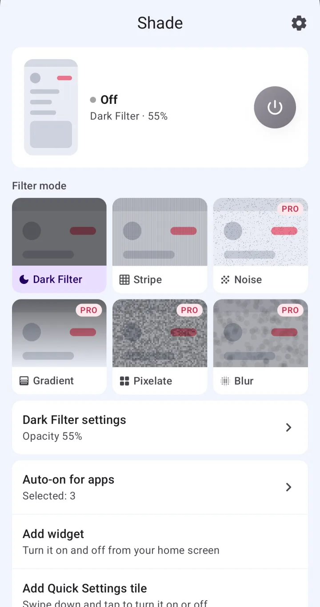
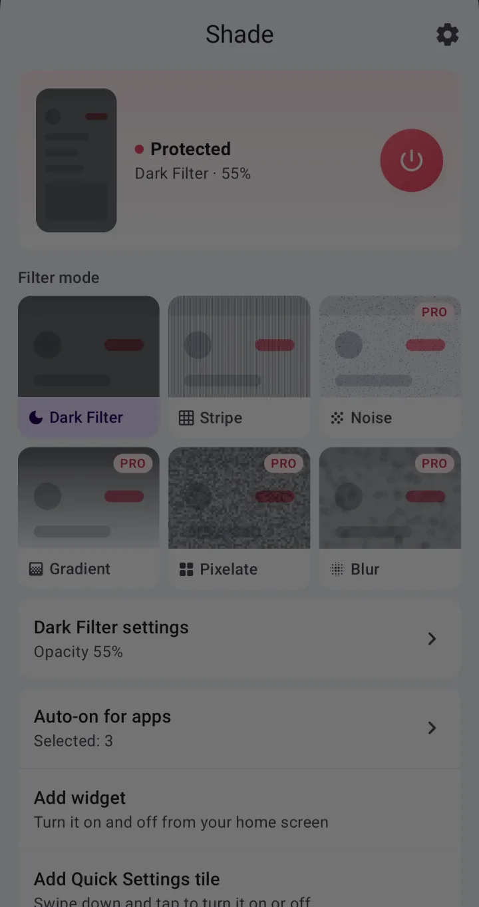
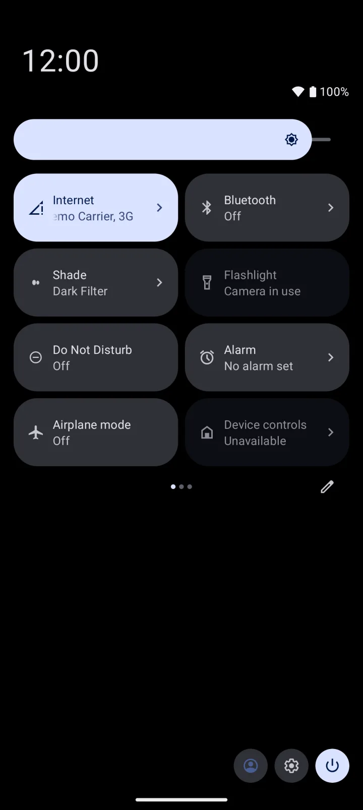
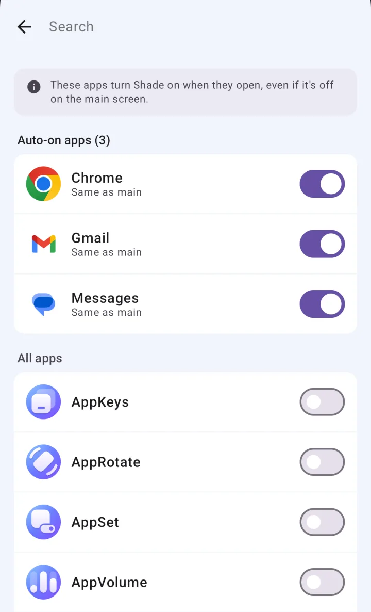
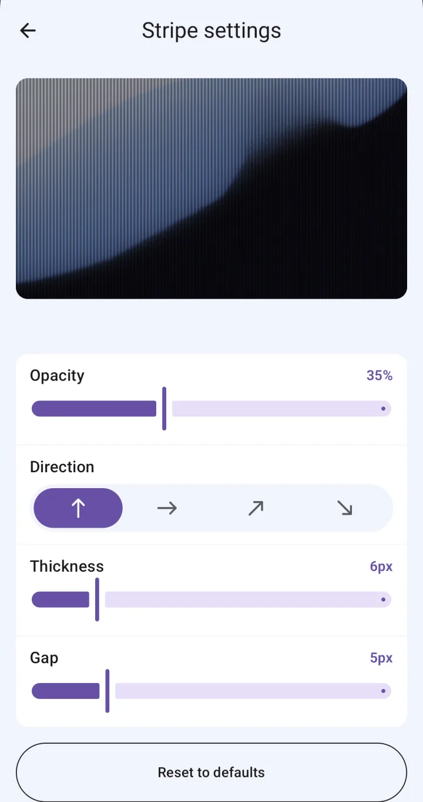

Six privacy filters
Choose from Dark Filter, Stripe, Noise, Gradient, Pixelate and Blur. Stripes run vertical, horizontal or diagonal either way, and Gradient fades from any of four sides.

Shade is an Android app that lays a privacy filter over your screen — darkening, stripes and more — so the person next to you on the train or in a café can't easily read it. Dark Filter and Stripe are free with ads; a one-time lifetime purchase unlocks the other four filters and removes the ads.
Get it on Google Play
One tap pulls a shade down over your screen. Tap again to lift it.
Pick which filter each Auto-on app uses — Stripe for your chat app, Blur for your bank.
You can pick any of the four Pro filters and preview it before buying. Previews work while protection is off; turning a Pro filter on takes Premium.
Choose from Dark Filter, Stripe, Noise, Gradient, Pixelate and Blur. Stripes run vertical, horizontal or diagonal either way, and Gradient fades from any of four sides.

Use the power button in the app, the Quick Settings tile, the home screen widget or the notification. You can add the tile and the widget right from Shade's main screen.

Open your bank or chat app and the filter turns on by itself. When Auto-on turned it on, it turns off again as soon as you leave that app.

Adjust opacity (0–95%), stripe width, spacing and direction, noise density, pixel size and blur strength, and reset to defaults anytime. Shade warns you above 80%, where your own screen may get hard to see.

| Free | Premium | |
|---|---|---|
| Price | Free | One-time lifetime purchase. Not a subscription |
| Filters | Dark Filter, Stripe | All six (adds Noise, Gradient, Pixelate, Blur) |
| Opacity and pattern settings | ✓ | ✓ |
| Auto-on for chosen apps | ✓ Any number of apps | ✓ |
| A different filter for each app | — (every app uses your main filter) | ✓ |
| Turn on/off from the button, tile, widget or notification | ✓ | ✓ |
| Ads | Banner, plus an ad when you open the app | None |
| Moving to a new phone | — | Restore your purchase with the same Google account |
Free features have no usage caps.
| Shade | Privacy screen protector | Screen dimmer apps | Lowering your phone's brightness | |
|---|---|---|---|---|
| How it hides the screen | Lays a filter over it (software) | Narrows the viewing angle | Darkens the whole screen | Turns the brightness down |
| What you see head-on | The stronger the filter, the darker it looks to you | Usually a clear screen | A darker screen | A darker screen |
| Turning it on and off | One tap from the button, tile, widget or notification | Always on once applied | Varies by app | Brightness slider in Quick Settings |
| Only in certain apps | Auto-on turns it on in apps you pick | No | Varies by app | Usually not |
| Filter types | Six (two free) | — | Usually just dimming | — |
| What it takes | Accessibility access. Free with ads, or a lifetime purchase | Buying and applying a film | Varies by app | Nothing extra |
Category columns describe typical behavior; individual products vary.
Shade is built for that. It lays a privacy filter, like darkening or stripes, over your screen so it's harder to read from the side. Turn it on or off with one tap from the app's power button, the Quick Settings tile, the home screen widget or the notification.
Yes. Dark Filter, Stripe, Auto-on, and turning the filter on and off from the tile, widget or notification are all free. There's no cap on how many apps or how often. The free version shows a banner ad and an ad when you open the app.
Premium is a one-time lifetime purchase, not a subscription. It unlocks the Noise, Gradient, Pixelate and Blur filters and a different filter for each app, and removes the ads.
Shade draws its filter over other apps through accessibility access, so it can't work without it. Its only other use is noticing when an app you added to Auto-on opens. Shade doesn't ask for the separate "display over other apps" permission.
Shade doesn't read what's on your screen. It checks which app is open only if you've added apps to Auto-on, and doesn't save or send that anywhere. Your filter and Auto-on settings are stored on your device. Ads (AdMob), usage stats and crash reports (Firebase) and purchase checks (Google Play) do use the internet.
Yes. Add the app to Auto-on and the filter turns on by itself whenever you open it. When Auto-on turned it on, it turns off again once you go to the home screen or another app. Auto-on is free; choosing a different filter for each app is Premium.
Lower the opacity in the filter's settings. Shade lays a filter over your screen, so the stronger it is, the darker it looks to you, and above 80% you may barely see it. You can also change the stripe width and spacing, or the noise density.
Not in the same way. Shade is a software filter drawn over your screen, not a film or display that narrows the viewing angle. There's no measurement of how well it hides your screen at a given distance or angle. Try different filters and opacity where you actually use your phone.
No. Shade runs only on Android 10 and later. There's no iPhone version.
Restore your purchase on the new phone with the same Google account. There's no separate sign-up or login. Premium from a promotion code works only on the device you redeemed it on, so it ends if you switch or reset that device.
Yes. With protection off, you can pick a Pro filter and preview it. Before you buy, it's preview only; turning it on takes Premium.
Enter it in the promotion code field on the Premium screen. Premium turns on for the number of days the code gives you, on that device only.